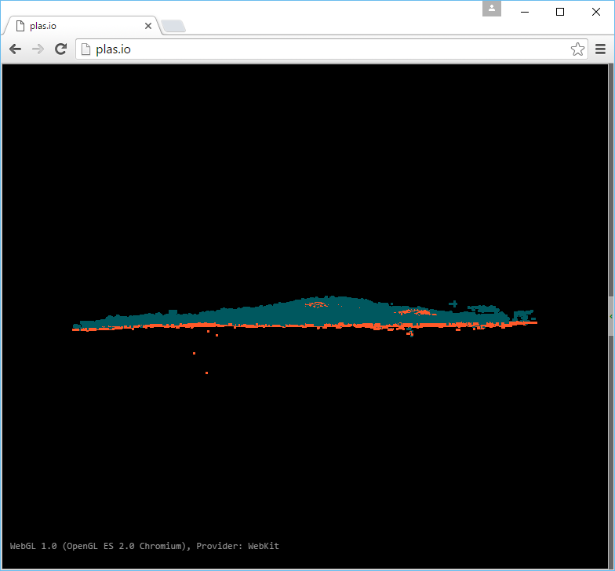

Identifying ground
- Purpose:
- Filter and classify ground points
Ground Workshop Materials
Ground Workshop Materials
| [Zhang2003] | Zhang, Keqi, et al. "A progressive morphological filter for removing nonground measurements from airborne LIDAR data." Geoscience and Remote Sensing, IEEE Transactions on 41.4 (2003): 872-882. |
1 2 3 4 5 6 | pdal translate ^
c:/Users/hobu/PDAL/exercises/analysis/ground/CSite1_orig-utm.laz ^
-o c:/Users/hobu/PDAL/exercises/analysis/ground/ground.laz ^
smrf ^
-v 4
|
Noise!
1 2 3 4 5 6 7 8 | pdal translate ^
c:/Users/hobu/PDAL/exercises/analysis/ground/CSite1_orig-utm.laz ^
-o c:/Users/hobu/PDAL/exercises/analysis/ground/ground.laz ^
smrf ^
range ^
--filters.range.limits="Classification[2:2]" ^
-v 4
|
1 2 3 4 5 6 7 8 9 10 | pdal translate ^
c:/Users/hobu/PDAL/exercises/analysis/ground/CSite1_orig-utm.laz ^
-o c:/Users/hobu/PDAL/exercises/analysis/ground/denoised-ground-only.laz ^
outlier smrf range ^
--filters.outlier.method="statistical" ^
--filters.outlier.mean_k=8 ^
--filters.outlier.multiplier=3.0 ^
--filters.smrf.ignore="Classification[7:7]" ^
--filters.range.limits="Classification[2:2]" ^
--writers.las.compression=true --verbose 4
|
On to Generating a DTM